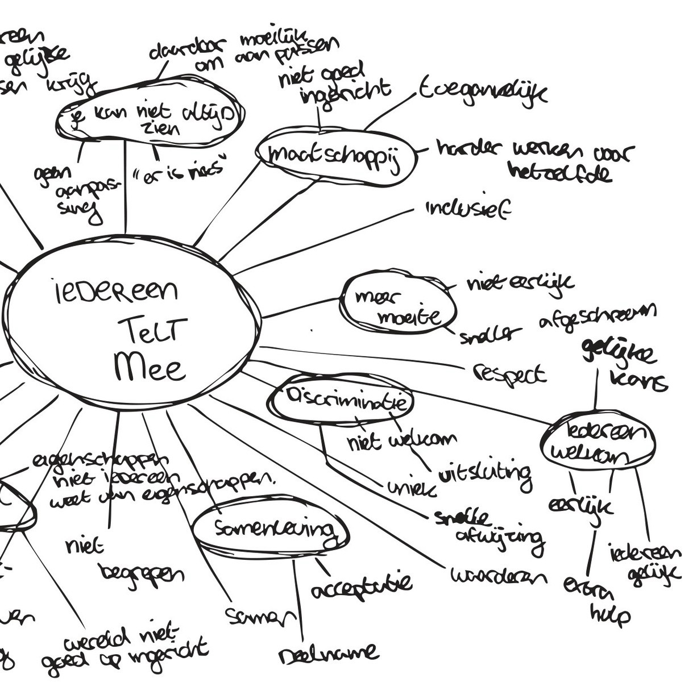

Concept & Vraagstelling
Als je zelf geen beperking hebt, sta je er vaak niet bij stil hoe moeilijk de stad kan zijn voor iemand in een rolstoel. Vanuit het thema ‘Iedereen telt mee’ ben ik gaan onderzoeken waar mensen in het dagelijks leven tegenaan lopen.
In een mindmap zette ik mijn eerste ideeën en associaties op papier. Ik wilde geen belerend vingertje wijzen, maar een beeld maken dat je meteen aan het denken zet over je eigen omgeving.
